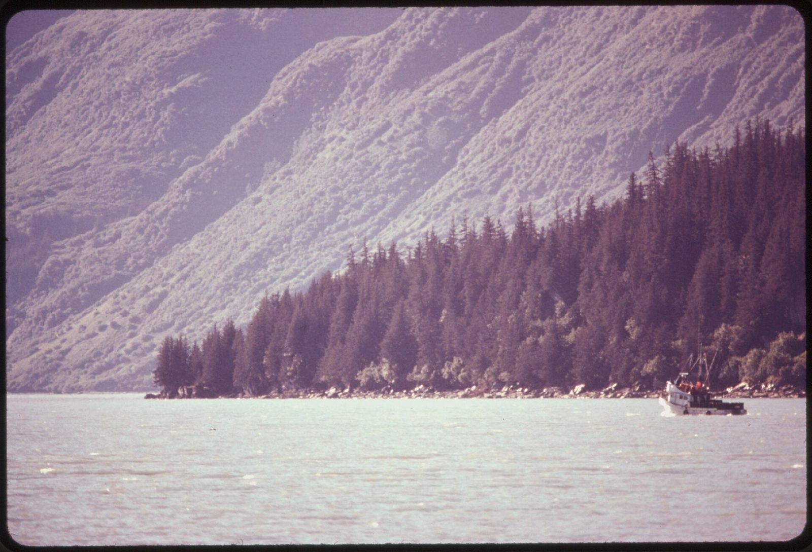
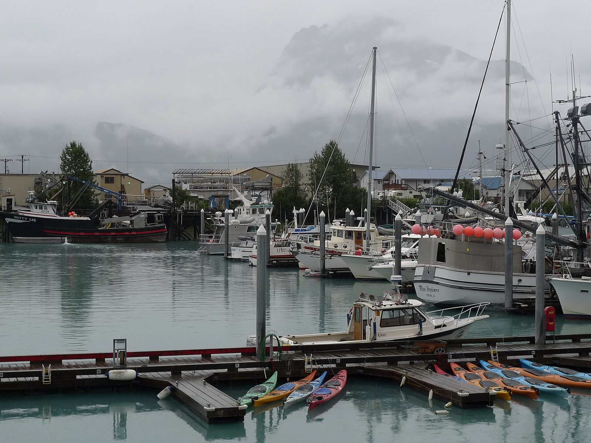

Directory / Southcentral Alaska / Valdez, AK
Valdez tides — Port Valdez & the small boat harbor
High and low tides for the coming week from NOAA station 9454240 (Valdez, Port Valdez — 61.125, -146.362), about a kilometer from the Valdez Small Boat Harbor. Times are local (AKST/AKDT). Heights are feet above Mean Lower Low Water (MLLW). Valdez sits at the head of Port Valdez, an ice-free fjord off Prince William Sound at the end of the Richardson Highway — home to a 600-plus-slip city harbor, the Prince William Sound seine and gillnet fleets in summer, charter and tour boats, and the Alaska Marine Highway ferry to Whittier and Cordova.
Inside calm, outside wind: Port, Narrows & Arm
The National Weather Service splits the Valdez approach into three marine zones: Port of Valdez (PKZ720, the harbor side of the fjord), Valdez Narrows (PKZ721), and Valdez Arm (PKZ722, out toward the Sound). They often read very differently. In the forecast issued 3:40 PM AKST Mon Nov 9, 2026, the Port of Valdez called for NE 10 kt and 2 ft seas tonight, while the Narrows carried a Small Craft Advisory (N 30 kt) and the Arm a Gale Warning (NE 30 kt rising to 40 kt). A flat harbor is not a forecast for the trip out — check all three below before you leave.
Tide range: in the NOAA predictions fetched 2026-11-09, the largest swing in the next five weeks comes on Wednesday, November 25, 2026: a 15.3 ft high at 12:54 PM followed by a −3.0 ft low at 7:49 PM, a drop of about 18.3 ft. Evening minus tides run every night from Nov 22 through Nov 29.
Computed from NOAA CO-OPS hi/lo predictions for 9454240 (2026-11-10 through 2026-12-16) and the NWS coastal waters forecast text, fetched 2026-11-09 21:10 AKST. Not for navigation.
Port Valdez then & now
Historic


Current

.jpg){kind=link}
Official NOAA predictions Station home NOAA chart viewer View on Windy
Port Sponsor — Valdez, AK
Top placement for fuel docks, marinas, yards, and marine businesses.
$25–$50 / month
Wednesday, November 11, 2026
| Tide | Time (local) | Height (MLLW) |
|---|---|---|
| High | 2:25 AM | 10.9 ft |
| Low | 7:46 AM | 4.2 ft |
| High | 1:33 PM | 13.2 ft |
| Low | 8:31 PM | -0.5 ft |
Thursday, November 12, 2026
| Tide | Time (local) | Height (MLLW) |
|---|---|---|
| High | 3:01 AM | 10.5 ft |
| Low | 8:21 AM | 4.6 ft |
| High | 2:04 PM | 12.7 ft |
| Low | 9:08 PM | 0.0 ft |
Friday, November 13, 2026
| Tide | Time (local) | Height (MLLW) |
|---|---|---|
| High | 3:40 AM | 10.0 ft |
| Low | 8:58 AM | 5.1 ft |
| High | 2:36 PM | 12.1 ft |
| Low | 9:48 PM | 0.7 ft |
Saturday, November 14, 2026
| Tide | Time (local) | Height (MLLW) |
|---|---|---|
| High | 4:27 AM | 9.5 ft |
| Low | 9:40 AM | 5.5 ft |
| High | 3:12 PM | 11.3 ft |
| Low | 10:32 PM | 1.3 ft |
Sunday, November 15, 2026
| Tide | Time (local) | Height (MLLW) |
|---|---|---|
| High | 5:26 AM | 9.1 ft |
| Low | 10:30 AM | 5.8 ft |
| High | 3:54 PM | 10.4 ft |
| Low | 11:19 PM | 1.9 ft |
Monday, November 16, 2026
| Tide | Time (local) | Height (MLLW) |
|---|---|---|
| High | 6:34 AM | 9.1 ft |
| Low | 11:30 AM | 6.0 ft |
| High | 4:59 PM | 9.5 ft |
Tuesday, November 17, 2026
| Tide | Time (local) | Height (MLLW) |
|---|---|---|
| Low | 12:11 AM | 2.4 ft |
| High | 7:34 AM | 9.4 ft |
| Low | 12:43 PM | 5.8 ft |
| High | 6:40 PM | 8.9 ft |
Wednesday, November 18, 2026
| Tide | Time (local) | Height (MLLW) |
|---|---|---|
| Low | 1:07 AM | 2.8 ft |
| High | 8:22 AM | 10.0 ft |
| Low | 2:05 PM | 5.0 ft |
| High | 8:07 PM | 8.9 ft |
Tide data: NOAA CO-OPS station 9454240, predictions (hi/lo, MLLW, local standard/daylight time). Refreshed with each nightly build; the marine-weather snapshot time below shows the latest fetch. Currents: nearest NOAA current-prediction station is PWS0746 (Valdez Boat Harbor Approach) — NOAA current predictions.
Marine weather & cameras
NWS marine forecast — Port of Valdez (PKZ720)
Issued 349 PM AKST Tue Nov 10 2026. Snapshot fetched 2026-11-10 21:11 AKST from NWS text product. Official zone forecast · Raw text
- .TONIGHT...NE wind 10 kt in the evening becoming variable less than 10 kt. Seas 2 ft.
- .WED...Variable wind less than 10 kt. Seas 2 ft. Snow and rain.
- .WED NIGHT...Variable wind less than 10 kt. Seas 2 ft. Snow and rain.
- .THU...E wind 10 kt. Seas 2 ft.
- .THU NIGHT...Variable wind less than 10 kt. Seas 2 ft.
- .FRI THROUGH SAT...Variable wind less than 10 kt. Seas 5 ft.
- .SUN...NE wind 10 kt. Seas 2 ft.
NWS marine forecast — Valdez Narrows (PKZ721)
Issued 349 PM AKST Tue Nov 10 2026. Snapshot fetched 2026-11-10 21:11 AKST from NWS text product. Official zone forecast · Raw text
...SMALL CRAFT ADVISORY TONIGHT...
- .TONIGHT...NE wind 25 kt. Seas 3 ft.
- .WED...N wind 20 kt. Seas 3 ft. Rain.
- .WED NIGHT...N wind 20 kt. Seas 3 ft. Rain and snow.
- .THU AND THU NIGHT...N wind 15 kt. Seas 3 ft.
- .FRI THROUGH SUN...NE wind 15 kt. Seas 3 ft.
NWS marine forecast — Valdez Arm (PKZ722)
Issued 349 PM AKST Tue Nov 10 2026. Snapshot fetched 2026-11-10 21:11 AKST from NWS text product. Official zone forecast · Raw text
- .TONIGHT...NE wind 15 kt. Seas 3 ft.
- .WED...NE wind 15 kt. Seas 3 ft.
- .WED NIGHT...NE wind 15 kt. Seas 3 ft. Rain.
- .THU...NE wind 10 kt. Seas 2 ft.
- .THU NIGHT...NE wind 15 kt. Seas 3 ft.
- .FRI...NE wind 15 kt. Seas 3 ft.
- .SAT THROUGH SUN...NE wind 10 kt. Seas 3 ft.
Nearby NDBC observation — Valdez (VDZA2, NOAA 9454240)
wind 10°, 2 kt, gust 4 kt, air 35°F, 981.8 hPa, water 46°F
Observation time 2026-11-10 20:30 AKST (converted to AKST). Attribution: NOAA NDBC station VDZA2. Snapshot fetched 2026-11-10 21:11 AKST.
Nearby NDBC observation — West Orca Bay buoy (46060)
wind 320°, 17 kt, gust 21 kt, air 45°F, 980.4 hPa, water 48°F
Observation time 2026-11-10 20:40 AKST (converted to AKST). Attribution: NOAA NDBC station 46060. Snapshot fetched 2026-11-10 21:11 AKST.
Nearby NDBC observation — Seal Rocks buoy (46061, Hinchinbrook Entrance)
wind 330°, 14 kt, gust 19 kt, seas 8.5 ft, 981.0 hPa, water 47°F
Observation time 2026-11-10 20:30 AKST (converted to AKST). Attribution: NOAA NDBC station 46061. Snapshot fetched 2026-11-10 21:11 AKST.
Harbor webcams
- City of Valdez live cams — South Boat Harbor (free public YouTube stream from the City of Valdez; cycles between harbor and waterfront cameras; link only, not embedded or rehosted)
- FAA WeatherCams — Valdez Pioneer Field (VDZ / PAVD) (free public link; East, Southeast and Southwest views; not embedded)
Local marine & shore directory
Verified public listings only. List free · Get featured
Marine services
Moorage & marinas
Seafood processors & buyers
Fuel docks
Shipyards & haul-outs
Boat repair & mechanics
Marine suppliers & chandleries
Electronics sales & installation
No verified listing yet — list your business free.
Welding & fabrication
Canvas & upholstery
No verified listing yet — list your business free.
Surveyors
No verified listing yet — list your business free.
Towing & salvage
No verified listing yet — list your business free.
Ice & bait
Fishing charters
Ashore for boaters
Groceries & provisioning
Hardware
Liquor stores
No verified listing yet — list your business free.
Laundromats
Showers
Lodging
Restaurants
Medical clinics
Pharmacies
Post office & shipping
Airport & floatplane
Propane
Auto & truck rental
Listings were checked 2026-11-09 against each business's own site or a public directory (City of Valdez Harbor and Boat Yard pages, Valdez Convention & Visitors Bureau 2026 guide business directory, Silver Bay Seafoods, Crowley, Providence). Silver Bay's Valdez plants are seasonal (salmon). Free basic listings; Featured listing $10/month or $100/year. Corrections or a free listing: J.L. Miller / pacifictides.ak@gmail.com (email only).
Local news — Valdez, AK
Plain links to local outlets. Always check the source for the latest. Local news partners welcome.
Free weekly tides & marine weather
Get a short email for your port. We do not sell your email. Privacy.
Mailing list powered by Buttondown.
Boating gear on Amazon
As an Amazon Associate I earn from qualifying purchases.
Helpful search links for common gear. Prices and availability are on Amazon.
Other Alaska ports
Sources
- NOAA CO-OPS station 9454240 — Valdez, Port Valdez (MDAPI name Valdez; lat 61.125, lng -146.362; verified 2026-11-09)
- Nearby currents reference: PWS0746 Valdez Boat Harbor Approach (not plotted on this page)
- Predictions API:
api.tidesandcurrents.noaa.gov/api/prod/datagetter(product=predictions, interval=hilo, datum=MLLW, time_zone=lst_ldt) - NWS coastal waters forecast zones PKZ720 Port of Valdez, PKZ721 Valdez Narrows, PKZ722 Valdez Arm (Port of Valdez zone confirmed via api.weather.gov for Valdez harbor waters)
- NDBC observations: VDZA2 Valdez (NOAA 9454240), 46060 West Orca Bay buoy, 46061 Seal Rocks buoy (Hinchinbrook Entrance)
- City of Valdez Harbor and Boat Yard pages (checked 2026-11-09)
- Directory:
data/businesses.csvrows for port_slug=valdez, each with its public source URL (verified 2026-11-09) - Photos: U.S. National Archives / EPA DOCUMERICA (public domain); Joseph from Cabin On The Road (CC BY-SA 2.0) via Wikimedia Commons. Graphics: original Pacific Tides artwork.